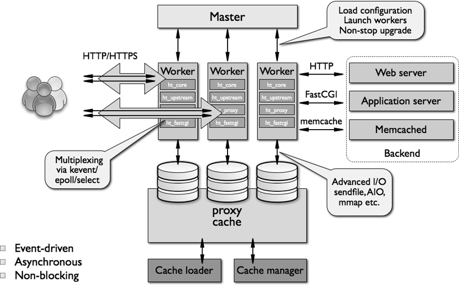
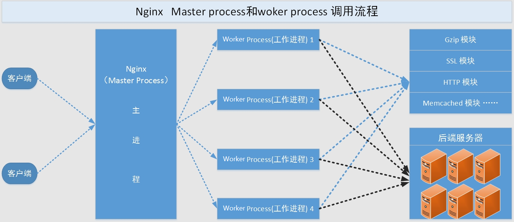
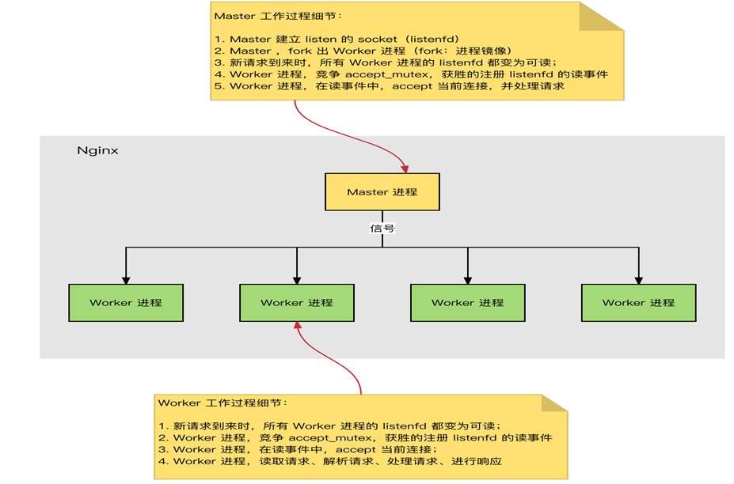
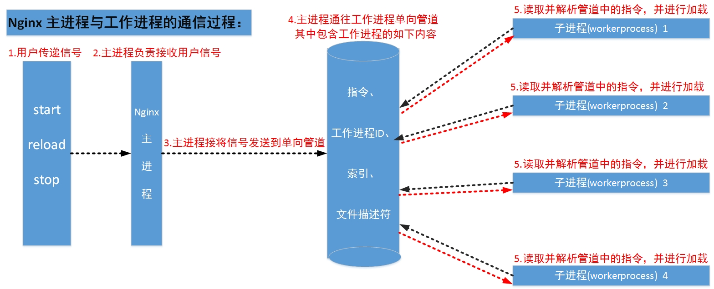
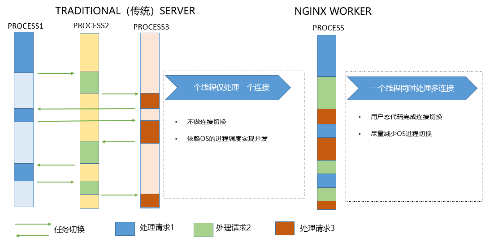
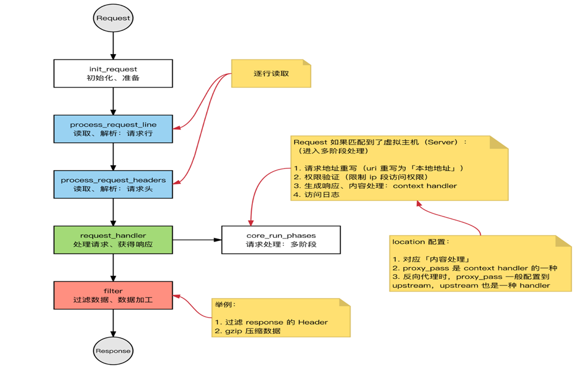
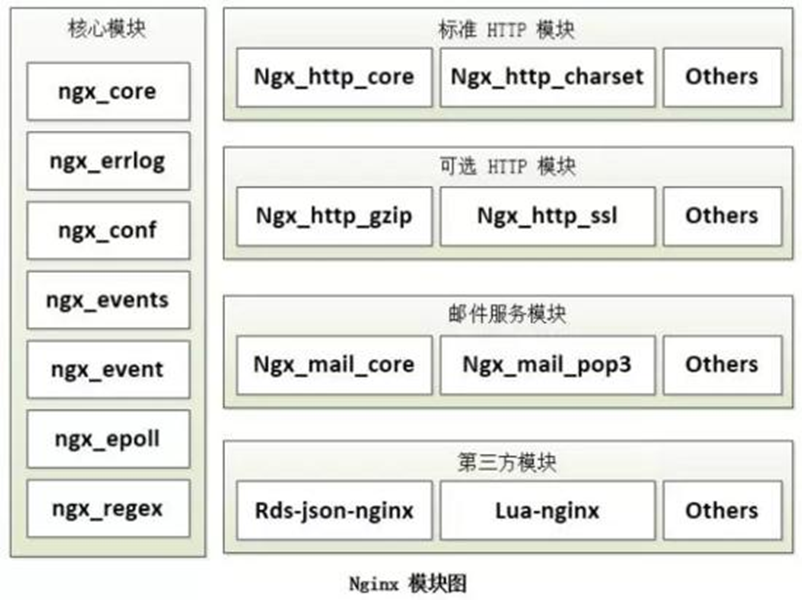

Nginx架构简介
本文最后更新于：1 小时前
Nginx基础架构和功能简介
Nginx架构
Nginx 概述
Nginx 介绍
Nginx：engine X ，2002年开发，分为社区版和商业版(nginx plus )
2019年3月11日 F5 Networks 6.7亿美元的价格收购
Nginx是免费的、开源的、高性能的HTTP和反向代理服务器、邮件代理服务器、以及TCP/UDP代理服务器解决了C10K问题（10K Connections），参考链接: http://www.ideawu.net/blog/archives/740.html
Nginx官网：http://nginx.org （社区版），https://www.nginx.com/（商业版）
nginx的其它的二次发行版：
Tengine：由淘宝网发起的Web服务器项目。它在Nginx的基础上，针对大访问量网站的需求，添加了很多高级功能和特性。Tengine的性能和稳定性已经在大型的网站如淘宝网，天猫商城等得到了很好的检验。它的最终目标是打造一个高效、稳定、安全、易用的Web平台。从2011年12月开始，Tengine成为一个开源项目，官网: http://tengine.taobao.org/
OpenResty：基于 Nginx 与 Lua 语言的高性能 Web 平台， 章亦春团队开发，官网：http://openresty.org/cn/
Nginx 功能介绍
- 静态的web资源服务器，如 html，图片，js，css，txt 等静态资源
- 基于http/https协议的反向代理（七层）
- 结合FastCGI/uWSGI/SCGI等协议反向代理动态资源请求
- 基于tcp/udp协议反向代理（四层）
- imap4/pop3协议的反向代理（邮件服务器）
Nginx 基础特性
- 模块化设计，较好的扩展性
- 高可靠性
- 支持热部署：不停机更新配置文件，升级版本，更换日志文件
- 低内存消耗：10000个keep-alive连接模式下的非活动连接，仅需2.5M内存
- 支持多种IO模型和零拷贝技术：event-driven, aio, mmap，sendfile
Web 服务相关的功能
- 虚拟主机（server）
- 支持 keep-alive 和管道连接(利用一个连接做多次请求)
- 访问日志（支持基于日志缓冲提高其性能）
- url rewirte
- 路径别名
- 基于IP及用户的访问控制
- 支持速率限制及并发数限制
- 重新配置和在线升级而无须中断客户的工作进程
Nginx 架构和进程
Nginx 架构

Nginx 进程结构
web请求处理机制
- 多进程方式：服务器每接收到一个客户端请求就有服务器的主进程生成一个子进程响应客户端，直到用户关闭连接，这样的优势是处理速度快，子进程之间相互独立，但是如果访问过大会导致服务器资源耗尽而无法提供请求。
- 多线程方式：与多进程方式类似，但是每收到一个客户端请求会有服务进程派生出一个线程来个客户方进行交互，一个线程的开销远远小于一个进程，因此多线程方式在很大程度减轻了web服务器对系统资源的要求，但是多线程也有自己的缺点，即当多个线程位于同一个进程内工作的时候，可以相互访问同样的内存地址空间，所以他们相互影响，一旦主进程挂掉则所有子线程都不能工作了，IIS服务器使用了多线程的方式，需要间隔一段时间就重启一次才能稳定。
Nginx是多进程组织模型，而且是一个由Master主进程和Worker工作进程组成。

主进程(master process)的功能：
对外接口：接收外部的操作（信号）
对内转发：根据外部的操作的不同，通过信号管理 Worker
监控：监控 worker 进程的运行状态，worker 进程异常终止后，自动重启 worker 进程
读取Nginx 配置文件并验证其有效性和正确性
建立、绑定和关闭socket连接
按照配置生成、管理和结束工作进程
接受外界指令，比如重启、升级及退出服务器等指令
不中断服务，实现平滑升级，重启服务并应用新的配置
开启日志文件，获取文件描述符
不中断服务，实现平滑升级，升级失败进行回滚处理
编译和处理perl脚本工作进程（worker process）的功能：
所有 Worker 进程都是平等的
实际处理：网络请求，由 Worker 进程处理
Worker进程数量：一般设置为核心数，充分利用CPU资源，同时避免进程数量过多，导致进程竞争CPU资源，增加上下文切换的损耗
接受处理客户的请求, 将请求依次送入各个功能模块进行处理
I/O调用，获取响应数据
与后端服务器通信，接收后端服务器的处理结果
缓存数据，访问缓存索引，查询和调用缓存数据
发送请求结果，响应客户的请求
接收主程序指令，比如重启、升级和退出等Nginx 工作流程

Nginx 进程间通信
工作进程是由主进程生成的，主进程使用fork()函数，在Nginx服务器启动过程中主进程根据配置文件决定启动工作进程的数量，然后建立一张全局的工作表用于存放当前未退出的所有的工作进程，主进程生成工作进程后会将新生成的工作进程加入到工作进程表中，并建立一个单向的管道并将其传递给工作进程，该管道与普通的管道不同，它是由主进程指向工作进程的单向通道，包含了主进程向工作进程发出的指令、工作进程ID、工作进程在工作进程表中的索引和必要的文件描述符等信息。主进程与外界通过信号机制进行通信，当接收到需要处理的信号时，它通过管道向相关的工作进程发送正确的指令，每个工作进程都有能力捕获管道中的可读事件，当管道中有可读事件的时候，工作进程就会从管道中读取并解析指令，然后采取相应的执行动作，这样就完成了主进程与工作进程的交互。
worker进程之间的通信原理基本上和主进程与worker进程之间的通信是一样的，只要worker进程之间能够取得彼此的信息，建立管道即可通信，但是由于worker进程之间是完全隔离的，因此一个进程想要知道另外一个进程的状态信息,就只能通过主进程来实现。
为了实现worker进程之间的交互，master进程在生成worker进程之后，在worker进程表中进行遍历，将该新进程的PID以及针对该进程建立的管道句柄传递给worker进程中的其他进程，为worker进程之间的通信做准备，当worker进程1向worker进程2发送指令的时候，首先在master进程给它的其他worker进程工作信息中找到2的进程PID，然后将正确的指令写入指向进程2的管道，worker进程2捕获到管道中的事件后，解析指令并进行相关操作，这样就完成了worker进程之间的通信。
此外worker进程可以通过共享内存来通讯，比如upstream中的zone，或者limit_req、limit_conn中的zone等。操作系统提供了共享内存机制。
Nginx 启动和HTTP连接建立

- Nginx 启动时，Master 进程，加载配置文件
- Master 进程，初始化监听的 socket
- Master 进程，fork 出多个 Worker 进程
- Worker 进程，竞争新的连接，获胜方通过三次握手，建立 Socket 连接，并处理请求
HTTP 请求处理流程

Nginx 模块介绍
nginx 有多种模块
核心模块：是 Nginx 服务器正常运行必不可少的模块，提供错误日志记录 、配置文件解析 、事件
驱动机制 、进程管理等核心功能
标准HTTP模块：提供 HTTP 协议解析相关的功能，比如： 端口配置 、 网页编码设置 、 HTTP响应
头设置 等等
可选HTTP模块：主要用于扩展标准的 HTTP 功能，让 Nginx 能处理一些特殊的服务，比如： Flash
多媒体传输 、解析 GeoIP 请求、 网络传输压缩 、 安全协议 SSL 支持等
邮件服务模块：主要用于支持 Nginx 的 邮件服务 ，包括对 POP3 协议、 IMAP 协议和 SMTP协议
的支持
Stream服务模块: 实现反向代理功能,包括TCP协议代理
第三方模块：是为了扩展 Nginx 服务器应用，完成开发者自定义功能，比如： Json 支持、 Lua 支
持等
nginx高度模块化，但其模块早期不支持DSO机制;1.9.11 版本支持动态装载和卸载
模块分类：
核心模块：core module
标准模块：
HTTP 模块：ngx_http_*
HTTP Core modules #默认功能
HTTP Optional modules #需编译时指定
Mail 模块: ngx_mail_*
Stream 模块 ngx_stream_*
第三方模块